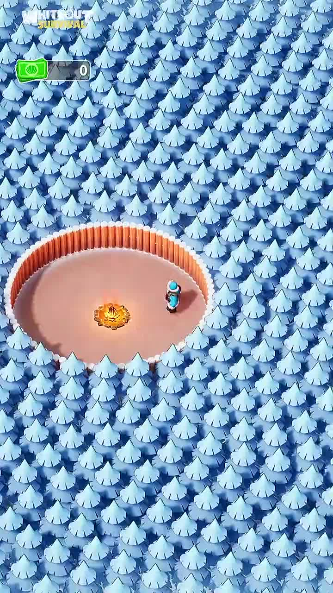
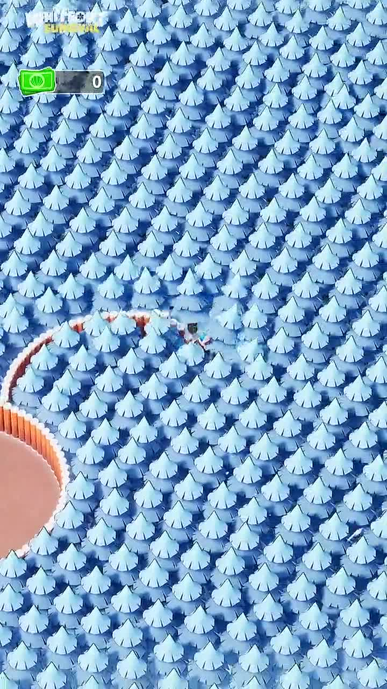
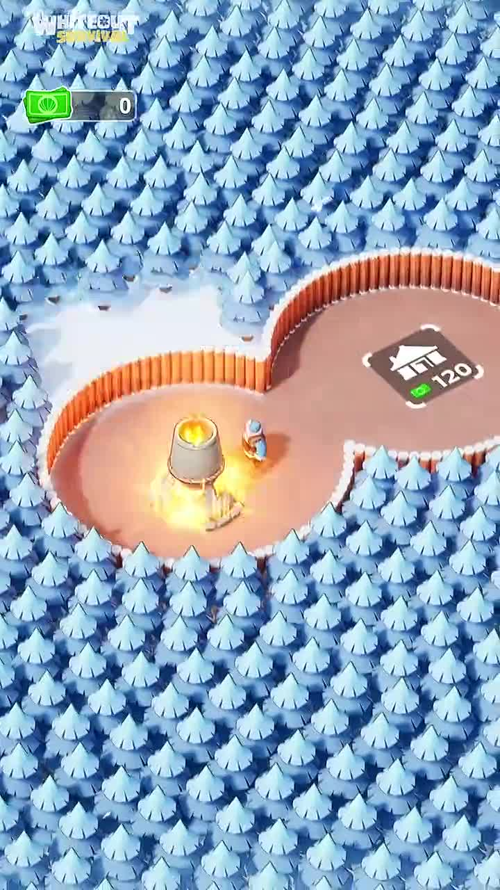
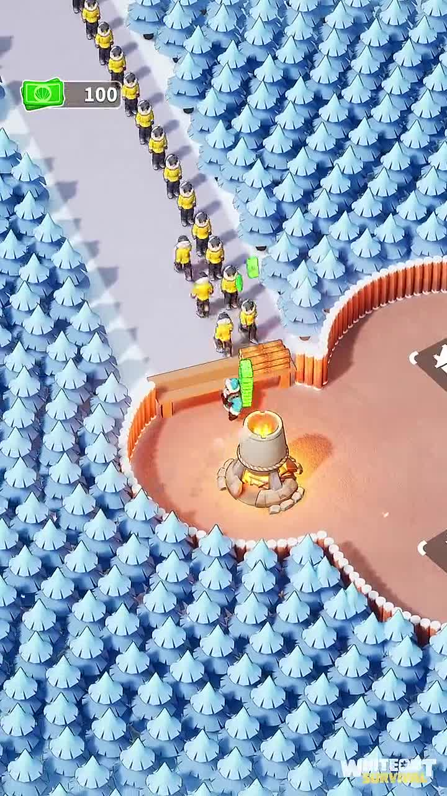
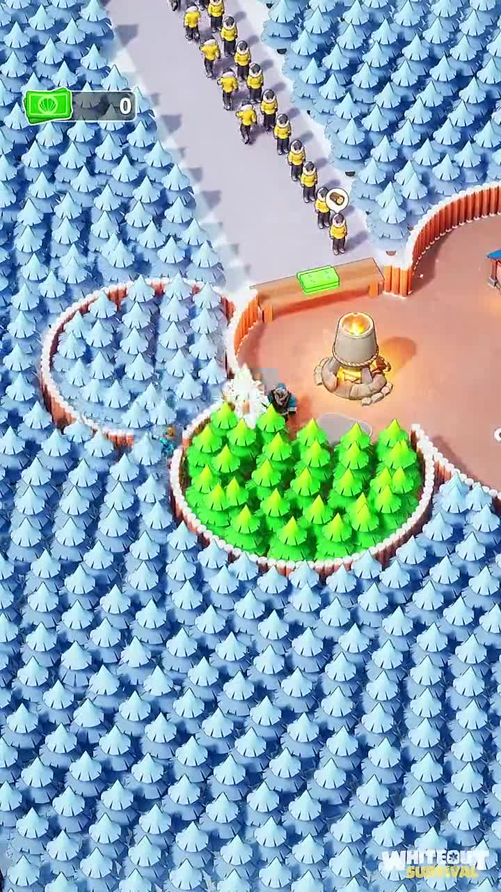
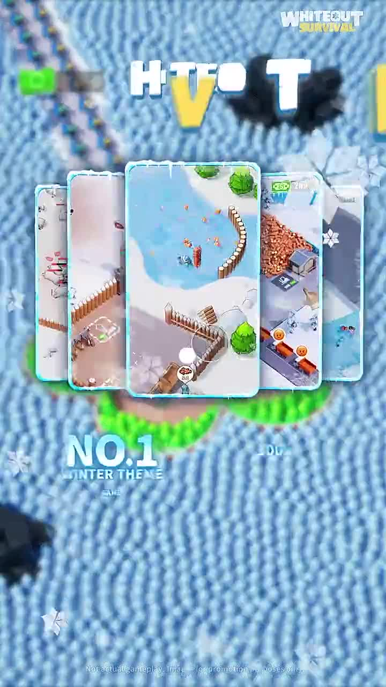
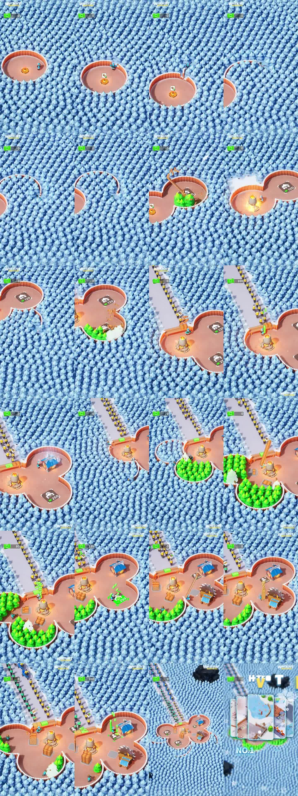
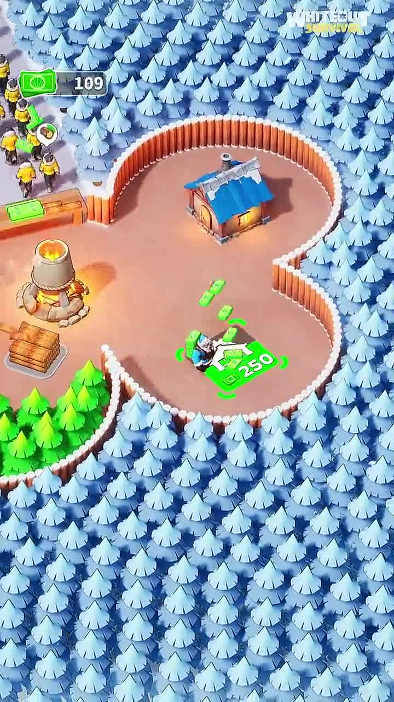
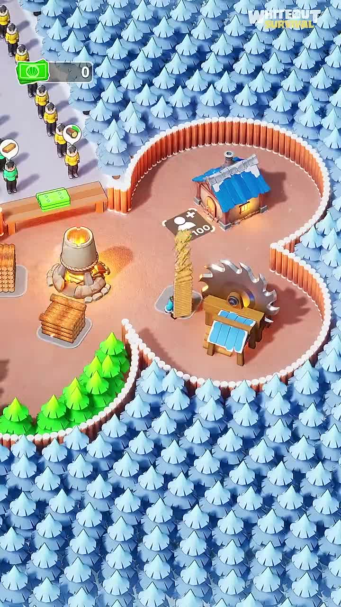
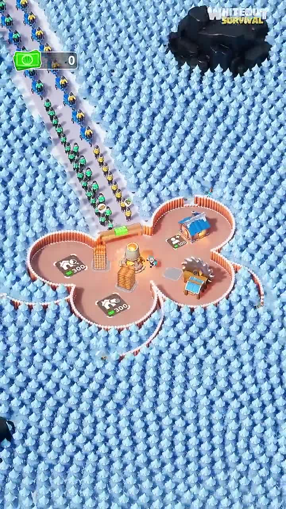

Hypothesis
If cold mobile game viewers see one worker convert a hostile frozen map into a functioning rescue base, they will understand the core loop and feel pulled to install.
The creative sells the game as a rescue-and-build loop where one tiny action turns frozen chaos into visible order.
If cold mobile game viewers see one worker convert a hostile frozen map into a functioning rescue base, they will understand the core loop and feel pulled to install.
Casual mobile players who like survival, idle resource loops, base building, and visible map-cleanup progression.
Cold prospecting with install intent.
Click-through rate, store visits, cost per install, and early gameplay engagement.
Genre-aware to product-aware mobile game viewers.
medium

overwhelm-to-control opening
The viewer immediately understands scale, scarcity, and a survival problem that can be acted on with one controllable character.

manual action creates visible terrain change
The map changes visibly after each action, making progress feel tactile and easy to understand without voiceover.

next-unlock prompt
The viewer sees a simple resource gate: clear space, gather materials, then unlock the next structure.

queued demand turns building into rescue pressure
The base is no longer just decoration; there is external pressure from people waiting to be rescued or admitted.

environment healing as progress proof
The creative rewards attention with a clear before-after state: the frozen camp is becoming alive and productive.

brand-and-store close
The ad shifts from simulated play to app-store style proof, but the headline legibility is weaker than the gameplay demonstration.
The creative sells the game as a rescue-and-build loop where one tiny action turns frozen chaos into visible order.
The viewer moves from seeing an overwhelming frozen wilderness to believing the game offers immediate control, rescue stakes, and steady settlement growth.
For Submagic, translate the mechanism into a raw-to-publishable workflow: show one creator action triggering visible captions, cuts, zooms, and output growth.
The midsection can feel repetitive, and the final proof card is less legible than the gameplay loop.
A tiny parka-wearing avatar starts in a small fenced clearing with a lit campfire, a green resource counter at 0, and dense snowy forest filling almost the entire vertical frame.
The viewer immediately understands scale, scarcity, and a survival problem that can be acted on with one controllable character.
For Submagic, translate the mechanism into a raw-to-publishable workflow: show one creator action triggering visible...
3 Evidence sources
The avatar carves a narrow path through the snow-packed tree wall and then harvests a bright green tree patch beside a build tile.
The map changes visibly after each action, making progress feel tactile and easy to understand without voiceover.
For Submagic, translate the mechanism into a raw-to-publishable workflow: show one creator action triggering visible...
3 Evidence sources
Inside the base, snowy land has become bright green forest, workers move through the clearing, and green cash bundles flow into the gate tile while survivors wait outside.
The creative rewards attention with a clear before-after state: the frozen camp is becoming alive and productive.
For Submagic, translate the mechanism into a raw-to-publishable workflow: show one creator action triggering visible...
2 Evidence sources
The end card overlays stacked gameplay screenshots, Whiteout Survival branding, a large partially readable headline, and a partially readable NO.1 winter-theme claim.
The ad shifts from simulated play to app-store style proof, but the headline legibility is weaker than the gameplay demonstration.
For Submagic, translate the mechanism into a raw-to-publishable workflow: show one creator action triggering visible...
2 Evidence sources

Replace a discount or feature list with a satisfying playable-looking loop and a branded end card.
Make the game instantly legible as a rescue-and-build loop before the viewer scrolls away.
A tiny parka-wearing avatar starts in a small fenced clearing with a lit campfire, a green resource counter at 0, and dense snowy forest filling almost the entire vertical frame.
The viewer immediately understands scale, scarcity, and a survival problem that can be acted on with one controllable character.
overwhelm-to-control opening
For Submagic, translate the mechanism into a raw-to-publishable workflow: show one creator action triggering visible captions, cuts, zooms, and output growth.
The avatar carves a narrow path through the snow-packed tree wall and then harvests a bright green tree patch beside a build tile.
The map changes visibly after each action, making progress feel tactile and easy to understand without voiceover.
manual action creates visible terrain change
For Submagic, translate the mechanism into a raw-to-publishable workflow: show one creator action triggering visible captions, cuts, zooms, and output growth.
The camera returns to the campfire hub, where a building icon with a 120 requirement appears while the avatar continues clearing snowy trees nearby.
The viewer sees a simple resource gate: clear space, gather materials, then unlock the next structure.
next-unlock prompt
For Submagic, translate the mechanism into a raw-to-publishable workflow: show one creator action triggering visible captions, cuts, zooms, and output growth.
A large queue of yellow-jacket survivors waits outside the base gate while the avatar applies green resource bundles to the entrance tile.
The base is no longer just decoration; there is external pressure from people waiting to be rescued or admitted.
queued demand turns building into rescue pressure
For Submagic, translate the mechanism into a raw-to-publishable workflow: show one creator action triggering visible captions, cuts, zooms, and output growth.
Inside the base, snowy land has become bright green forest, workers move through the clearing, and green cash bundles flow into the gate tile while survivors wait outside.
The creative rewards attention with a clear before-after state: the frozen camp is becoming alive and productive.
environment healing as progress proof
For Submagic, translate the mechanism into a raw-to-publishable workflow: show one creator action triggering visible captions, cuts, zooms, and output growth.

A blue-roofed hut and sawmill-like machine appear, with the avatar spending green currency and carrying a long stack of wood to a 100-cost tile.
The ad layers a production loop on top of the rescue loop, suggesting depth without explaining menus or strategy systems.
base-building escalation
For Submagic, translate the mechanism into a raw-to-publishable workflow: show one creator action triggering visible captions, cuts, zooms, and output growth.

The base now contains campfire, hut, sawmill, stacked lumber, green forest patches, survivor lanes, and a 200 resource counter while the avatar spends on another tile.
The player fantasy shifts from surviving alone to managing a growing settlement with multiple simultaneous needs.
single-worker loop expands into system management
For Submagic, translate the mechanism into a raw-to-publishable workflow: show one creator action triggering visible captions, cuts, zooms, and output growth.

A zoomed-out view shows a multi-room base carved out of the snow forest, long survivor queues, and multiple 300-cost build tiles still waiting.
The unfinished build pads create completion tension: the viewer can imagine the next upgrades before the ad ends.
unfinished-map tension
For Submagic, translate the mechanism into a raw-to-publishable workflow: show one creator action triggering visible captions, cuts, zooms, and output growth.
The end card overlays stacked gameplay screenshots, Whiteout Survival branding, a large partially readable headline, and a partially readable NO.1 winter-theme claim.
The ad shifts from simulated play to app-store style proof, but the headline legibility is weaker than the gameplay demonstration.
brand-and-store close
For Submagic, translate the mechanism into a raw-to-publishable workflow: show one creator action triggering visible captions, cuts, zooms, and output growth.
| # | Claim | Proof type | Weakness | Evidence |
|---|---|---|---|---|
| 1 | The world starts hostile and resource-scarce. | first-frame scale contrast and zero resource UI | The opening has no explicit caption explaining the goal. |
2 evidence IDs
|
| 2 | Player actions visibly change the map. | path clearing and harvesting animation | The ad does not show whether these actions are actual player controls or staged creative. |
3 evidence IDs
|
| 3 | The base has external rescue pressure. | survivor queue and gate resource payment | The survivors' exact role is inferred visually, not stated in text. |
3 evidence IDs
|
| 4 | The loop escalates into base management. | hut, sawmill, lumber stacks, multiple build pads, and resource counters | The ad shows many objects but no clear feature explanation. |
5 evidence IDs
|
| 5 | The brand and install prompt arrive after the gameplay proof. | stacked screenshot end card and Whiteout Survival branding | The sampled end-card text is partly unreadable. |
2 evidence IDs
|
People enjoy feeling that a chaotic system can be made safe, productive, and complete through a series of small obvious actions.
A skeptical viewer may read this as polished ad-only gameplay because the loop is highly simplified, UI costs jump quickly, and the end-card ranking claim is not independently substantiated in the video.
If survivor pressure appeared earlier, the creative would likely become more emotionally legible before the first retention drop. If the ad opened with only the end card, it would lose the tactile proof that makes the loop understandable. If every resource action had a clearer before-after label, non-game viewers might understand the stakes faster.
The avatar is tiny compared with the huge snowy forest. The resource counter begins at 0, making scarcity explicit. Build tiles show numeric costs that are not yet affordable. Survivors queue outside the gate, giving the base-building a human deadline. Unfinished pads remain visible near the end, keeping completion pressure open.
| Time | Viewer state | Trigger | Evidence |
|---|---|---|---|
| 0.0-0.5 | orientation | Tiny avatar, warm campfire, resource counter at 0, and overwhelming snow forest. |
2 evidence IDs
|
| 2.0-5.6 | agency | Path clearing and harvesting create visible progress. |
3 evidence IDs
|
| 19.7-25.4 | pressure | Survivors queue outside the gate while the avatar spends resources to unlock access. |
2 evidence IDs
|
| 36.6-47.9 | competence | Hut, sawmill, lumber stacks, and resource payments make the player look increasingly capable. |
4 evidence IDs
|
| 50.7-53.6 | completion itch | Zoomed-out base and end card show unfinished pads, screenshots, and brand close. |
2 evidence IDs
|
| Dimension | Score | Weakness / next improvement | Evidence |
|---|---|---|---|
| Copycat Risk Control high confidence |
1/3 | Any adaptation must avoid the Whiteout Survival brand, winter map, UI, screenshots, and ranking claim. |
2 evidence IDs
|
| End Card Clarity medium confidence |
1/3 | The gameplay screenshots are clear, but headline and ranking copy are partly unreadable in the sampled end frame. |
2 evidence IDs
|
| Emotional Pressure high confidence |
2/3 | Survivor queues add stakes, but they arrive after several purely mechanical beats. |
3 evidence IDs
|
| Pacing Efficiency medium confidence |
2/3 | The 56-second runtime gives proof depth but repeats harvesting and spending beats. |
4 evidence IDs
|
| Submagic Transferability medium confidence |
2/3 | The state-change mechanism transfers well; the game surface and brand assets do not. |
4 evidence IDs
|
| Core Loop Clarity high confidence |
3/3 | The clear-gather-build loop is readable from visuals alone. |
4 evidence IDs
|
| Hook Strength high confidence |
3/3 | The first frame is visually strong, but a clearer goal cue could broaden comprehension. |
2 evidence IDs
|
| Progression Proof high confidence |
3/3 | The base visibly grows from campfire to multi-structure settlement. |
4 evidence IDs
|
Strong vertical visual hook and satisfying loop; survivor stakes should arrive sooner for short attention spans.
The visual transformation fits Reels, but small UI and late end-card text may be harder to read on quick scroll.
The loop is understandable, but the runtime is long for a purely mechanical demo without spoken structure.
Playable-style progression and install-oriented end card fit paid mobile-game acquisition creative.
The creative is consumer mobile-game acquisition and has no business or professional framing.